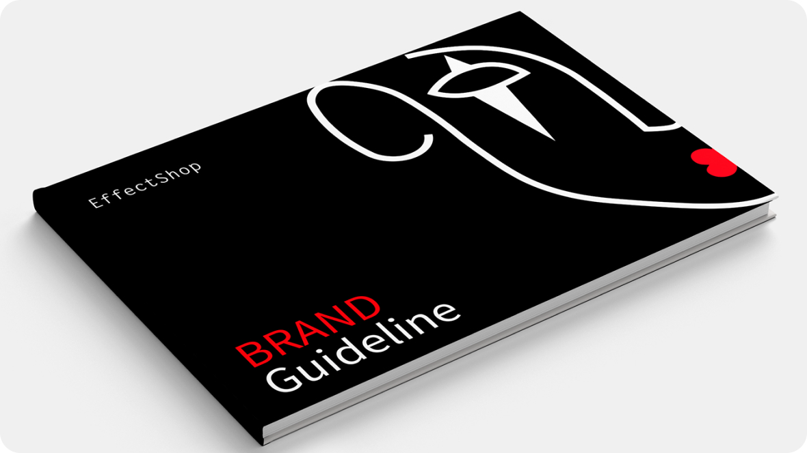
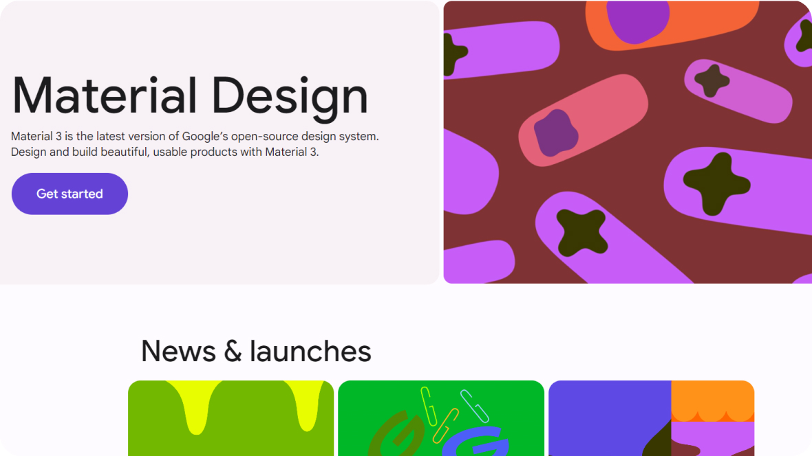
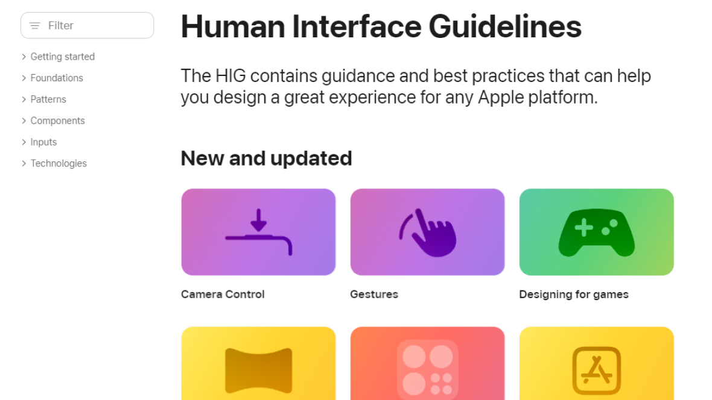

UX/UI дизайн
Гайдлайны
Гайдлайны мобильных систем ― это набор правил для создания приложений, максимально удобных для пользователей разных платформ.
Это не жесткие правила, а набор желательных параметров, которые позволяют обеспечить эффективное взаимодействие с мобильным интерфейсом. Ведь если приложение будет неудобным, пользователям будет некомфортно им пользоваться, что скажется на его распространении и монетизации.
Одна из ключевых задач гайдлайнов ― помочь разработчикам создавать приложения с единым, узнаваемым стилем в рамках одной операционной системы. Это особенно важно для мобильных устройств, где пользователи привыкли к знакомым моделям взаимодействия и не хотят тратить время на освоение новых интерфейсов.
Гайдлайны не только описывают принципы UX, но и дают рекомендации по ключевым аспектам UI ― шрифтам, цветам, верстке, анимации. Ведь качественный визуальный дизайн не только обеспечивает удобство, но и способствует популярности самой платформы.
Ведущие мобильные ОС, такие как Android и iOS, имеют собственные детальные инструкции ― Google Material Design и Apple Human Interface Guidelines.

Изображения Behance: Anastasia Mastaeva
Google Material Design System

Скриншот сайта Material Design
Google Material Design System ― это комплексная система дизайна, разработанная компанией Google для создания интерфейсов мобильных и веб-приложений для Android.
Основные принципы Material Design
1. Материальность. Интерфейс строится на основе метафоры физического материала с тенями, текстурами и анимациями, имитирующими реальные объекты.
Например, в приложении Google Maps кнопки, меню и другие элементы имеют объемные тени, создавая ощущение "материальности" интерфейса.
2. Единство. Все элементы интерфейса должны следовать единым визуальным и поведенческим стандартам, создавая целостный пользовательский опыт.
Например, весь интерфейс Gmail выдержан в единой цветовой гамме, шрифтах и стилистике, обеспечивая целостность дизайна.
3. Естественность. Взаимодействие с приложением должно быть интуитивным и соответствовать привычным пользовательским моделям.
Например, жесты смахивания и прокрутки в приложении Google Maps выполнены интуитивно понятно, соответствуя привычным пользовательским моделям.
4. Динамичность. Элементы интерфейса могут меняться размер, форму и расположение в ответ на действия пользователя.
Например, в Gmail кнопка "Написать" плавно увеличивается при фокусировке, адаптируясь к действиям пользователя.
Ключевые компоненты Material Design
1. Цветовая палитра с акцентными и вспомогательными цветами. Например, Google Maps использует фирменную синюю, зеленую и серую гамму Google
2. Типографика на основе современных шрифтов Google Fonts. Например, приложения Google, такие как Google Play Store и YouTube, используют шрифты из семейства Google Fonts
3. Иконографика с набором стандартных пиктограмм. Например, иконки в Google Play Store следуют единому стилю, характерному для Material Design
4. Элементы управления ― кнопки, поля ввода, меню и др. Например, кнопки, меню, чекбоксы и другие компоненты интерфейса Google Drive соответствуют гайдлайнам Material Design.
5. Принципы построения интерфейсов ― компоновка, навигация, анимации. Например, навигация в Google Maps основана на плавных анимированных переходах между экранами
Apple Human Interface Guidelines

Скриншот сайта Apple HIG
Apple Human Interface Guidelines (HIG) ― это свод рекомендаций и принципов, разработанных Apple для создания интуитивных и привлекательных пользовательских интерфейсов на платформах Apple, таких как iOS, macOS, watchOS и tvOS.
Основные принципы Apple HIG
1. Естественность. Интерфейсы должны быть интуитивно понятными и соответствовать привычным пользовательским моделям взаимодействия с реальными объектами. Это достигается за счет использования метафор и жестов, знакомых пользователям.
Например, на сайте Apple изображения iPhone выглядят как реальные смартфоны ― с нюансами материалов, точными пропорциями и достоверными теневыми эффектами.
2. Единство. Все элементы приложения должны следовать единому визуальному и поведенческому стилю, создавая целостный и узнаваемый пользовательский опыт.
Например, весь сайт Apple выдержан в фирменном стиле Apple с использованием характерных шрифтов, цветов и иконографики.
3. Минимализм. Интерфейсы должны быть простыми и лаконичными, с акцентом на основные функции, без лишних деталей и отвлекающих элементов. Это позволяет пользователям сосредоточиться на выполнении своих задач.
Например, дизайн страниц лаконичен, с акцентом на демонстрацию продуктов и их ключевые характеристики.
4. Фокус. Дизайн должен помогать пользователям сосредоточиться на выполнении их основных задач, не отвлекая их на второстепенные действия. Это достигается за счет грамотной визуальной иерархии и расстановки акцентов.
Например, визуальная иерархия и компоновка страниц направляют внимание пользователей на основные призывы к действию.
Ключевые компоненты Apple HIG
1. Визуальный стиль. Например, приложение Apple Podcasts использует фирменные шрифты, цвета и иконки, характерные для стиля Apple.
2. Взаимодействие и жесты. Apple HIG регламентирует использование специфических жестов, таких как свайп, пинч-зум, 3D Touch и других, которые стали привычными для пользователей экосистемы Apple. Например, в приложении Apple Maps пользователи могут использовать привычные жесты, такие как свайп для смены вида карты или двойное нажатие для приближения.
3. Навигация и структура. Например, приложение Apple Notes использует традиционную для iOS навигацию с вкладками и панелью инструментов внизу экрана.
4. Контент и информация. Apple HIG дает рекомендации по оформлению и подаче текстового и мультимедийного контента, чтобы он максимально поддерживал фокус пользователей на основных задачах. Например, в приложении Apple Music визуальная иерархия и минималистичный интерфейс помогают сосредоточиться на прослушивании музыки.
5. Адаптивность и доступность. Например, приложение WhatsApp адаптируется под различные размеры экранов iPhone и iPad.
Инструкция по использованию Apple Human Interface Guidelines и Google Material Design System
Изучение основных принципов
Для Apple HIG:
Ознакомься с основными принципами дизайна, такими как простота и интуитивность. В разделе "Getting started" ты найдешь рекомендации по структуре и организации интерфейса. Посмотри на примеры успешных приложений и изучи, как они применяют эти принципы.
Для Google Material Design:
Изучи ключевые философии Material Design, такие как "material as a metaphor" и "bold, graphic, intentional". Эти концепции помогут тебе понять, как визуальные элементы влияют на пользовательский опыт. Ознакомься с набором компонентов и их использованием. В разделе "Components" ты найдешь готовые решения для создания интерфейсов.
Использование элементов дизайна
В Apple HIG:
Найди раздел, посвященный рекомендуемым компонентам интерфейса, таким как кнопки, формы и навигация. Обрати внимание на размеры и отступы, чтобы соответствовать стандартам Apple. Скачай и используй доступные ресурсы, такие как шаблоны и иконки, чтобы ускорить процесс проектирования.
В Google Material Design:
Перейди в раздел "Components" и выбери те, которые подходят для твоего проекта. Скачай иконки, фреймы и другие элементы, чтобы использовать их в своем дизайне. Ознакомься с примерами взаимодействий и анимаций, чтобы сделать твой интерфейс более отзывчивым и интуитивным.
Применение принципов респонсивного дизайна
Apple HIG:
Ознакомься с рекомендациями по адаптации интерфейса для различных размеров экранов. Убедись, что элементы интерфейса хорошо смотрятся на iPhone, iPad и других устройствах.
Google Material Design:
Используй сетки и пропорциональные размеры, чтобы гарантировать адаптивность твоего интерфейса. Изучи документы о создании responsive Layout для твоих приложений.
Тестирование и получение обратной связи
Для Apple HIG:
После проектирования интерфейса проведи тестирование на устройствах Apple, чтобы проверить usability. Рекомендации HIG помогут тебе в анализе поведения пользователей.
Для Google Material Design:
Используй инструменты, такие как Material Theming для настройки твоего интерфейса. Проведи A/B тестирование, чтобы измерить эффективность разных вариантов.
Как составить собственные гайдлайны
1. Определи цель и аудиторию
Цель: Начни с определения целей своих гайдлайнов. Ты хочешь создать унифицированный стиль для своего продукта или сосредоточиться на улучшении пользовательского опыта? Четко сформулируй цели каждого раздела своих гайдлайнов.
Аудитория: Определи, кто будет использовать гайдлайны. Это могут быть твои коллеги-дизайнеры, разработчики, маркетологи или конечные пользователи. Понимание аудитории поможет тебе адаптировать язык и содержание документации.
2. Исследование и вдохновение
Анализ существующих систем: Поищи вдохновение в уже существующих системах, таких как Apple Human Interface Guidelines и Google Material Design. Обрати внимание на используемые компоненты, структуру и стилистические элементы.
Сбор ресурсов: Посмотри на шрифты, цветовые палитры и другие элементы, которые можно использовать или адаптировать для своих нужд.
3. Определение визуальных стилей
Цветовая палитра: Выбери цвета, которые будут использоваться в интерфейсе. Определи основные цвета, акцентные цвета и цвета для фона и текста. Например, установи кодовые значения цветов в формате HEX или RGB.
Типографика: Реши, какие шрифты будут использоваться. Определи основные стили (заголовки, тексты, кнопки) и размеры шрифтов. Запиши, какие шрифты подходят для различных элементов интерфейса.
Иконография: Определи стиль иконок, которые будут использоваться в приложении. Иконки должны быть консистентными по размеру, стилю и цвету.
Создание компонентов интерфейса
Кнопки: Опиши различные типы кнопок (например, первичные, вторичные, большие, маленькие). Укажи размеры, цвета и состояния (нормальное, наведенное, отключенное).
Форма: Определи стили форм и элементов управления (поля ввода, переключатели, радиокнопки). Обрати внимание на отступы, размеры и визуальные эффекты при взаимодействии.
Навигация: Создай рекомендации для основных навигационных элементов, таких как меню, вкладки и хлебные крошки. Убедись, что навигация проста и интуитивно понятна.
Установление принципов взаимодействия
Анимация: Определи, как должны происходить анимации при взаимодействии с компонентами. Укажи длительность, тип и переходы.
Отзывчивость: Опиши, как интерфейс должен адаптироваться к различным размерам экранов и устройствам. Установи правила для использования медиа-запросов и адаптивных сеток.
Доступность: Включи рекомендации по созданию доступных интерфейсов, таких как контрастность текста, навигация с клавиатуры и использование экранных читалок.
Документирование и форматирование
Структура: Создай четкую структуру для своих гайдлайнов. Это может быть текстовый документ с разделами или интерактивная платформа, такая как Notion, Figma или другие системы дизайна.
Примеры: Включай примеры, чтобы проиллюстрировать, как применять каждое правило на практике. Визуальные примеры помогут твоей команде лучше понять стили и компоненты.
Обновляемость: Убедись, что твои гайдлайны легко обновляемы. Разработай процесс, чтобы проверять и обновлять их по мере необходимости на основе обратной связи и изменений в продукте.
Примеры заданий для практики
Создание цветовой палитры
Составь цветовую палитру для нового продукта, состоящую из основного цвета, акцентных цветов и фонов. Укажи кодовые значения (HEX или RGB) для каждого цвета.
Типографика
Выбери два шрифта, которые будут использоваться в интерфейсе, и создай стили typographic scale (размеры заголовков, подзаголовков и текстов). Проиллюстрируй, как они будут использоваться на страницах.
Дизайн кнопок
Разработай набор кнопок (например, для действий «Подтвердить», «Отменить», «Подробнее»). Укажи размеры, цвет, углы закругления и различные состояния (обычное, наведенное, отключенное).
Компоненты формы
Создай макет формы для регистрации пользователя, включая поля для ввода (имя, электронная почта, пароль и т.д.), радиокнопки и чекбоксы. Укажи стили и состояния для каждого элемента.
Проектирование навигации
Разработай структуру навигации для веб-приложения или мобильного приложения. Создай макет основного меню, бокового меню и хлебных крошек.
Создание гайдлайнов
Создай собственные гайдлайны, включающие в себя все элементы, которые ты разработал (цвета, типографику, кнопки и т.д.). Используй структуру и документы, которые знакомы из существующих систем.